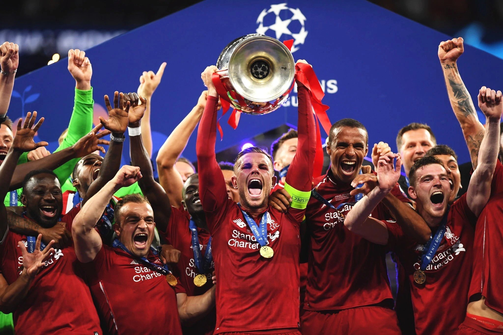

Hieronder vind je alle grote winsten van Liverpool Fc in de afgelopen jaren
 UEFA Championsleague 2019De finale van de UEFA Champions League 2019 was de laatste wedstrijd van de UEFA Champions League 2018/19, het 64e seizoen van Europa's belangrijkste clubvoetbaltoernooi georganiseerd door de UEFA en het 27e seizoen sinds het omgedoopt werd tot UEFA Champions League. Het werd gespeeld in het Metropolitano-stadion in Madrid, Spanje op 1 juni 2019, tussen de Engelse teams Tottenham Hotspur (in hun eerste Europa Cup-finale) en Liverpool (in hun negende overall en hun tweede op rij, nadat ze waren verslagen door Real Madrid in 2018). Het was de zevende Champions League-finale - en de vierde van het decennium - met twee teams van dezelfde bond, en de tweede volledig Engelse finale (de eerste was in 2008). Het was ook de eerste finale sinds 2013 waarin niet ten minste één Spaans team aanwezig was, waarbij Real Madrid en Barcelona de vorige vijf titels gedeeld hadden.
Premier League 2020De Premier League 2020–21 was het 29e seizoen van de Premier League, de beste Engelse profcompetitie voor voetbalclubs sinds de oprichting in 1992 en het 122e seizoen van Engels topvoetbal in het algemeen. Het seizoen zou aanvankelijk beginnen op 8 augustus 2020 en eindigen op 16 mei 2021, maar dit werd uitgesteld tot 12 september als gevolg van het uitstel van de afsluiting van het vorige seizoen vanwege de COVID-19-pandemie. Liverpool was de titelverdediger, nadat het vorig seizoen hun eerste Premier League en negentiende Engelse landstitel had gewonnen. In een seizoen dat grotendeels achter gesloten deuren werd gespeeld, behaalde Manchester City een vijfde Premier League-titel en een zevende Engelse landstitel in het algemeen met drie wedstrijden over; het was ook de derde titel van de club in de afgelopen vier seizoenen.